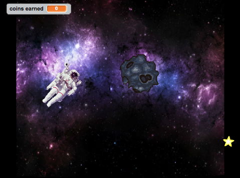

Liza Moody is an ambitious and independent girl from Richmond, VA.
She is eager to learn more about computer science and has been a part of the technology
club for girls at Freeman High school for the past three years. Wanting to share her
knowledge with others, she organized a computer programming day for three local elementary
schools last spring. This summer, she has traveled to San Francisco, CA where she is expanding
her knowledge of computer science at the Twitter Headquarters. She hopes to blend her interest
in computer science with her zeal for travel after she graduates from college.
Portfolio:
Scratch Projects

Liza worked with a fellow Girls Who Code student, Cody, to create "Space Break" a retro, scrolling game.